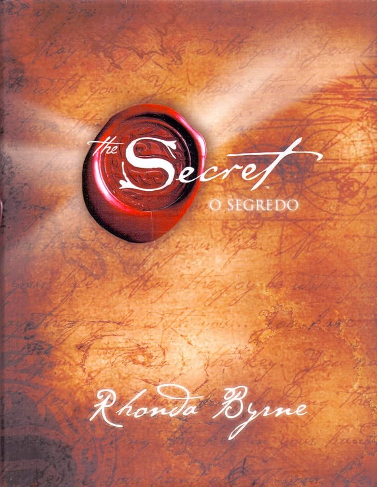

The Secret - O Segredo
A obra que tornou Rhonda Byrne conhecida mundialmente. O livro apresenta a ideia da lei da atração, mostrando como pensamentos e emoções podem influenciar a realidade. Uma leitura inspiradora para quem busca mudança de mentalidade.